Do CSV ao gráfico de publicação, sem escrever código
Guia para o time: como instalar, como montar o primeiro gráfico, as ferramentas de análise (ajustes, barras de erro, testes estatísticos) e como guardar e retomar o trabalho.
Neste manual
O que é o Cinabro e o que ele faz por você
Instalação no Windows primeira abertura, atalho, o que fazer se algo falhar
Conhecendo a tela os 7 painéis e a faixa de ferramentas
Seu primeiro gráfico em 5 passos e como preparar o CSV
Tipos de gráfico qual escolher
Deixando o gráfico do seu jeito eixos, cores, texto, legenda, estilos prontos
Análises ajuste de curva, média ± DP, barras de erro, normalidade, ANOVA, Kruskal-Wallis
Anotações no gráfico texto, formas, figuras
Exportar PNG, PDF, SVG, TIFF… e o tamanho certo
Guardar e retomar o trabalho salvamento automático, projeto, abas, código
Boas práticas, perguntas frequentes e pedido de ajuda
Dica Quer só começar? Leia os capítulos 2 (instalar) e 4 (primeiro gráfico): leva 10 minutos. O resto é para consultar quando precisar.
1. O que é o Cinabro
O Cinabro é um laboratório de gráficos científicos. Você envia uma planilha (CSV), escolhe o tipo de gráfico e ajusta o visual com cliques; o gráfico se atualiza na hora, com a mesma aparência do arquivo que você vai baixar. Foi feito para o dia a dia do laboratório: relatórios, artigos e apresentações com um padrão visual único para todo o time.
Tudo em português, em uma tela organizada em 7 painéis.
Roda no seu computador, dentro do navegador. Os seus dados não são enviados para a internet; a conexão com o programa é local (127.0.0.1).
Padrão visual da marca: fonte Barlow, cores do Cinabro e 12 paletas que funcionam bem impressas e para quem tem daltonismo.
Análises embutidas: ajuste de curva com equação e R², média ± desvio padrão, barras de erro, testes de normalidade, ANOVA, Kruskal-Wallis e comparações par a par, com valor de p.
Reprodutível: o programa escreve o código equivalente em R do gráfico que você montou. Quem quiser automatizar, copia e usa em script.
Exporta em PNG, JPEG, TIFF, PDF e SVG (EMF, se disponível), no tamanho em centímetros e na resolução que a revista pede.
Princípio "Menos é mais": a tela mostra o essencial; o que é raro fica recolhido em "Mais opções" ou nasce só quando você pede (um cartão de ajuste, uma caixa de estatística).
2. Instalação no Windows
São 3 passos e só o primeiro precisa ser repetido em outro computador. Reserve uns 10 minutos e internet na primeira vez.
2.1 O que você precisa
Item
Detalhe
R (versão 4.4 ou mais nova)
O R é o motor que desenha os gráficos. É gratuito. Baixe em cran.r-project.org → Download R for Windows → base → Download R x.y.z for Windows. Execute o instalador e aceite as opções padrão. Se o computador pedir senha de administrador, peça ao suporte de TI.
Navegador
Chrome, Edge ou Firefox atualizados.
Internet
Só na primeira abertura, para baixar os pacotes do R que o Cinabro usa (cerca de 20). Depois, funciona sem internet.
O arquivo ZIP do Cinabro
Fornecido pelo responsável do projeto (Cinabro.zip).
2.2 Extrair o ZIP
1
Clique com o botão direito no ZIP → "Extrair tudo…"
Escolha uma pasta curta, por exemplo C:\cinabro. Evite pastas com nomes muito compridos ou dentro de outras pastas fundas: o Windows tem limite de tamanho de caminho.
Atenção Extraia tudo. Não dê dois cliques nos arquivos de dentro do ZIP sem extrair: o programa precisa de todas as pastas juntas (motor de gráficos, fontes, exemplos).
2.3 Primeira abertura
2
Dê dois cliques em abrir_app.bat
Se o Windows mostrar "O Windows protegeu o computador", clique em Mais informações → Executar assim mesmo (o arquivo não é assinado digitalmente; isso é esperado).
3
Espere a janela preta terminar de instalar os pacotes
Na primeira vez ela baixa tudo o que falta; leva alguns minutos e fecha sozinha apenas quando você sair do Cinabro. Não feche a janela. Quando acabar, o navegador abre sozinho em http://127.0.0.1:8421.
C:\Windows\System32\cmd.exe — exemplo do que aparece na primeira vez
R encontrado: C:\Program Files\R\R-4.5.2\bin\Rscript.exe
Atalho "Cinabro" criado na area de trabalho e no menu Iniciar.
Abrindo o Cinabro no navegador (http://127.0.0.1:8421)...
== Cinabro: primeira abertura ==
Instalando os pacotes que faltam (precisa de internet; pode levar alguns minutos):
shiny, ggplot2, scales, patchwork, ragg, systemfonts, jsonlite, gtable, ...
Pacotes prontos.
Listening on http://127.0.0.1:8421
Pronto Na mesma primeira abertura, o programa já cria o atalho Cinabro (com o logotipo) na área de trabalho e no menu Iniciar. Não é preciso fazer mais nada.
2.4 No dia a dia
Abra pelo atalho Cinabro da área de trabalho. Ele abre o programa sem janela preta.
Para encerrar, use o botão Sair (canto superior direito do programa). Se você só fechar a aba do navegador, o R continua rodando em segundo plano por 10 minutos e depois se encerra sozinho.
Se o navegador mostrar a tela cinza ou "desconectado", recarregue a página (F5): o programa oferece Retomar de onde você parou (capítulo 10).
2.5 Se algo der errado
Se nada resolver, veja o que mandar ao pedir ajuda no capítulo 11.
O que acontece
O que fazer
A janela pergunta "Caminho do Rscript.exe"
O programa não achou o R. Procure o arquivo Rscript.exe (normalmente em C:\Program Files\R\R-x.y.z\bin\), clique nele com o botão direito → Copiar como caminho → cole na janela e tecle Enter. Ele lembra o caminho nas próximas vezes.
"NÃO consegui instalar pacotes…"
Sem internet ou rede da empresa com proxy. Conecte-se e abra de novo; na rede da empresa, peça ao suporte o endereço do proxy.
O Windows ou o antivírus bloqueou o arquivo
Clique em Mais informações → Executar assim mesmo. Se o antivírus bloquear o atalho (que usa um pequeno script), abra pelo abrir_app.bat, que mostra as mensagens na janela.
O navegador abriu numa página em branco ou de erro
Espere 10–20 segundos e recarregue (F5). Se houver outro Cinabro aberto, o novo escolhe outra porta e mostra o endereço na janela.
O atalho está com o ícone antigo
Cache de ícones do Windows: apague o atalho, abra o abrir_app.bat de novo (ele recria) ou reinicie o Explorer.
Mudei a pasta de lugar
Abra o abrir_app.bat uma vez: ele recria o atalho apontando para a pasta nova.
3. Conhecendo a tela
A tela tem três áreas: o painel lateral (onde você configura), a faixa de ferramentas (onde você adiciona análises e anotações) e o gráfico, que muda na hora conforme você mexe.
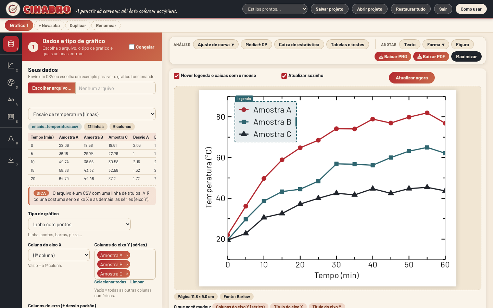
1234567
#
Onde
Para quê
1
Cabeçalho
Estilos prontos (publicação, apresentação) · Salvar projeto / Abrir projeto (dados + configuração) · Restaurar tudo (volta ao padrão) · Sair · Como usar (guia rápido de 4 passos).
2
Abas
Um gráfico por aba: + Nova aba, Duplicar (cópia para variar) e Renomear.
3
Trilho de painéis
Os 7 ícones abrem cada painel: 1 Dados · 2 Eixos · 3 Cores e símbolos · 4 Fonte e textos · 5 Legenda · 6 Análises e anotações · 7 Tamanho e exportação.
4
Painel aberto
As opções do painel escolhido. Seções recolhidas (▸) abrem com um clique. Cada passo tem uma dica colorida explicando o essencial.
5
Faixa de ferramentas
Análise: Ajuste de curva, Média ± DP, Caixa de estatística, Tabelas e testes · Anotar: Texto, Forma, Figura · Baixar PNG / PDF · Maximizar (esconde os painéis para o gráfico ocupar a tela; Esc volta).
6
Gráfico
Prévia ao vivo. Arraste a legenda e as caixas com o mouse; clique num título ou eixo para editá-lo ali mesmo. Com "Atualizar sozinho" ligado o gráfico se refaz após cada mudança; senão, use Atualizar agora.
7
Rodapé
Tamanho da página, fonte e a lista "O que você mudou", que mostra tudo o que saiu do padrão.
Guia rápido Na primeira abertura aparece o "Como usar em 4 passos" (carregue os dados, monte e ajuste, confira, baixe). Para ver de novo, clique em Como usar, no canto superior direito. E quase todo campo tem um texto de ajuda em cinza logo abaixo: leia, ele diz o que o campo faz e dá um exemplo.
4. Seu primeiro gráfico em 5 passos
Vamos usar o exemplo "Ensaio de temperatura", que já vem no programa, para você ver o caminho completo. Depois, é só trocar pelo seu CSV.
1
Carregue os dados
No painel 1 · Dados, clique em Escolher arquivo… e selecione o seu CSV, ou escolha um exemplo na lista "…ou use um exemplo". Aparecem o nome do arquivo, o número de linhas e colunas e uma tabela de conferência.
2
Escolha o tipo de gráfico
Em Tipo de gráfico: linha com pontos, só pontos, barras, boxplot, pizza, histograma… (veja o capítulo 5). O gráfico aparece na hora.
3
Escolha as colunasColuna do eixo X (padrão: a 1ª coluna) e Colunas do eixo Y (as séries). Deixar o Y vazio usa todas as outras colunas numéricas; clique no campo para escolher só algumas.
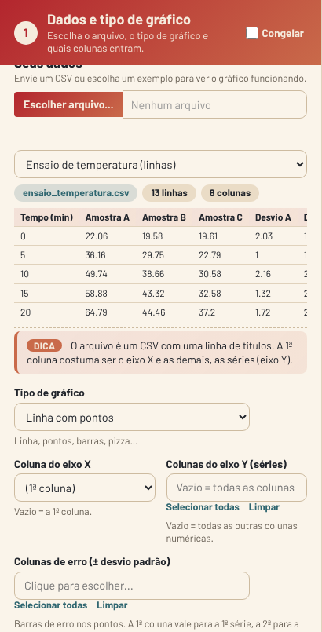
Painel Dados com o exemplo carregado e a tabela de conferência.
4
Dê nomes aos eixos
No painel 2 · Eixos, abra a seção Números e títulos e escreva o Título do eixo X e do eixo Y, com a unidade: Tempo (min), Temperatura (°C). Para expoentes use m^{2} e para índices CO_{2}.
5
Baixe o gráfico
Na faixa acima do gráfico, clique em Baixar PNG (imagem) ou Baixar PDF (vetorial). Para outros formatos e tamanhos, veja o capítulo 9.
Dica As colunas Desvio A e Desvio B deste exemplo são desvios padrão, não séries. Para usá-los como barras de erro, veja o capítulo 7.
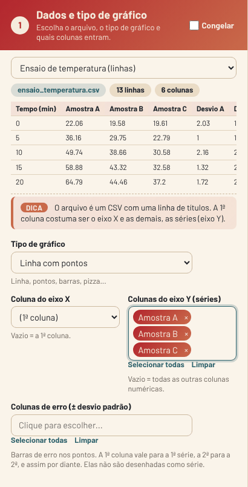
Escolhendo as séries (colunas Y) do gráfico.
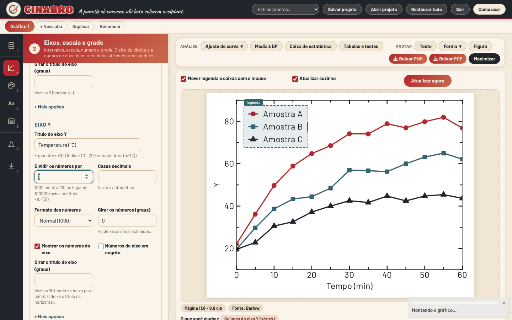
O resultado: três séries, eixos nomeados e legenda arrastável. Tudo se refaz sozinho a cada mudança.
Como preparar o CSV
CSV é uma planilha salva como texto (no Excel: Salvar como → CSV). O Cinabro entende o formato do Excel brasileiro sozinho: separador ;, decimal com vírgula e acentos (Latin-1 ou UTF-8) são detectados automaticamente.
A 1ª linha traz os títulos das colunas.
Formato largo (o mais comum): uma coluna para o X e uma coluna para cada série. Para replicatas: uma coluna por grupo, uma linha por medição.
Formato longo: uma coluna com o nome do grupo (ex.: Tratamento) e outra com o valor (Resposta). Informe a coluna de grupo ao usar boxplot ou histograma.
Datas (01/03/2024 00:00) viram um eixo de tempo.
Barras de erro: uma coluna com o desvio padrão de cada ponto (capítulo 7).
Atenção Não deixe linhas de título extra, células mescladas ou totais no meio dos dados. Células vazias são aceitas.
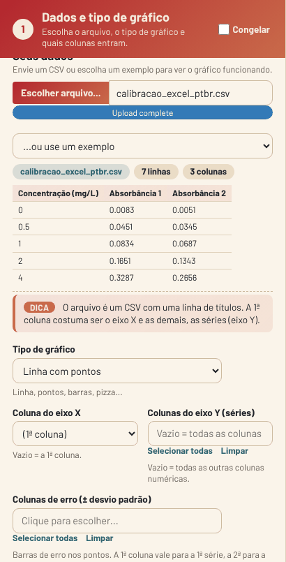
CSV do Excel brasileiro (vírgula decimal, ponto e vírgula): lido sem configurar nada.
Arquivos grandes Com dezenas de milhares de linhas, a prévia usa uma amostra que preserva picos e vales (aparece um aviso "Prévia simplificada"); o arquivo que você baixa usa todas as linhas.
5. Tipos de gráfico
Em Dados → Tipo de gráfico. Todos usam as mesmas colunas e o mesmo visual; só muda a forma de desenhar. Os exemplos abaixo vêm da pasta dados do programa.
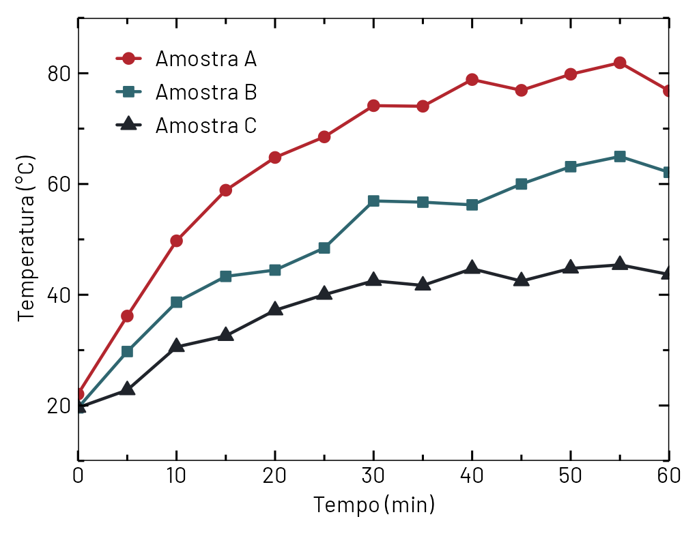
Linha com pontos / só linha / só pontos
Séries ao longo de X (tempo, concentração). "Só pontos" é a dispersão, ideal para ajuste de curva.
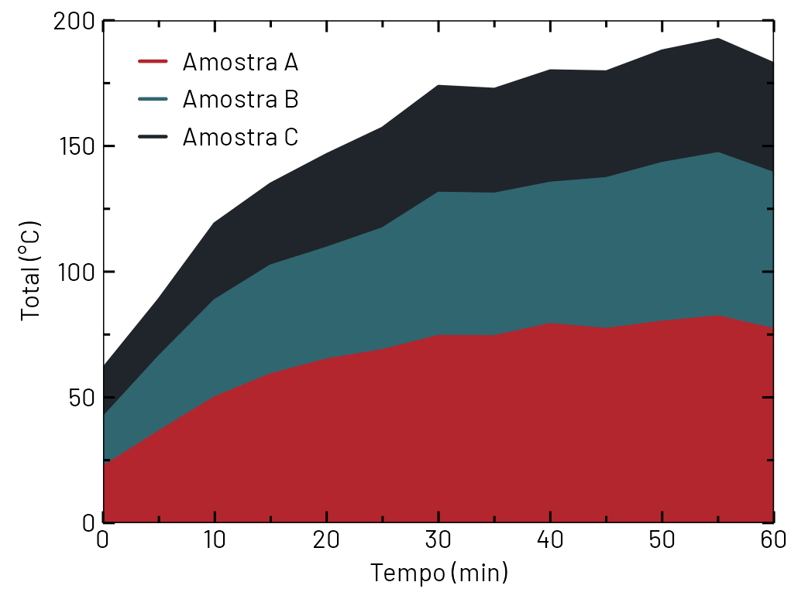
Área e área empilhada
Contribuição de cada série para o total ao longo de X.
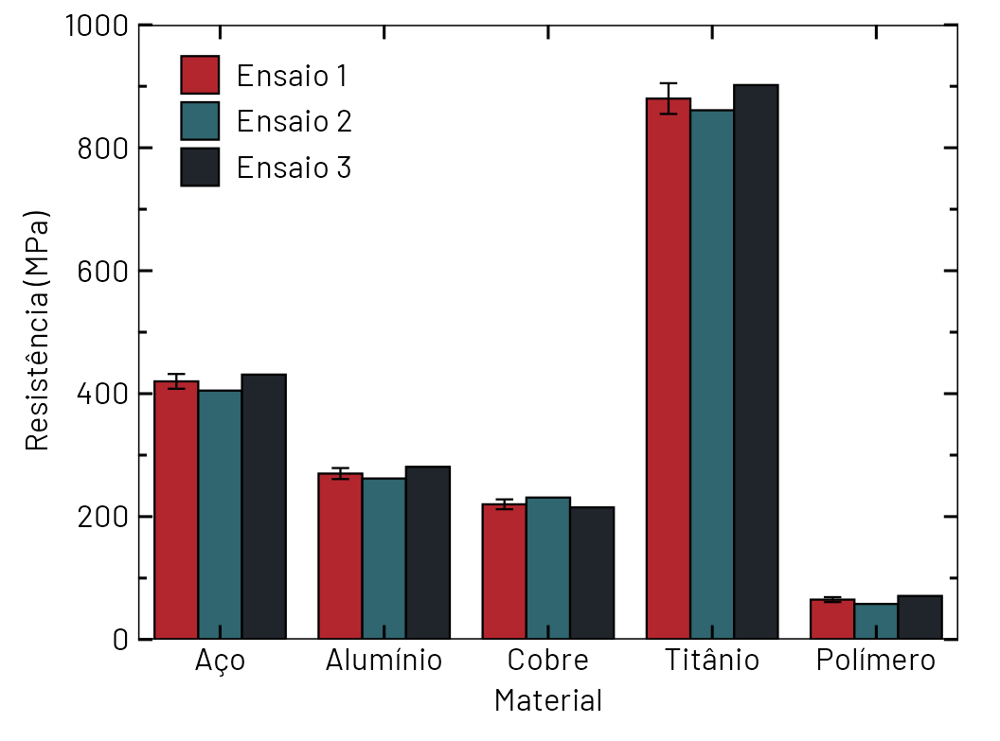
Barras
Comparar categorias (materiais, tratamentos). Aceita barras de erro por série.
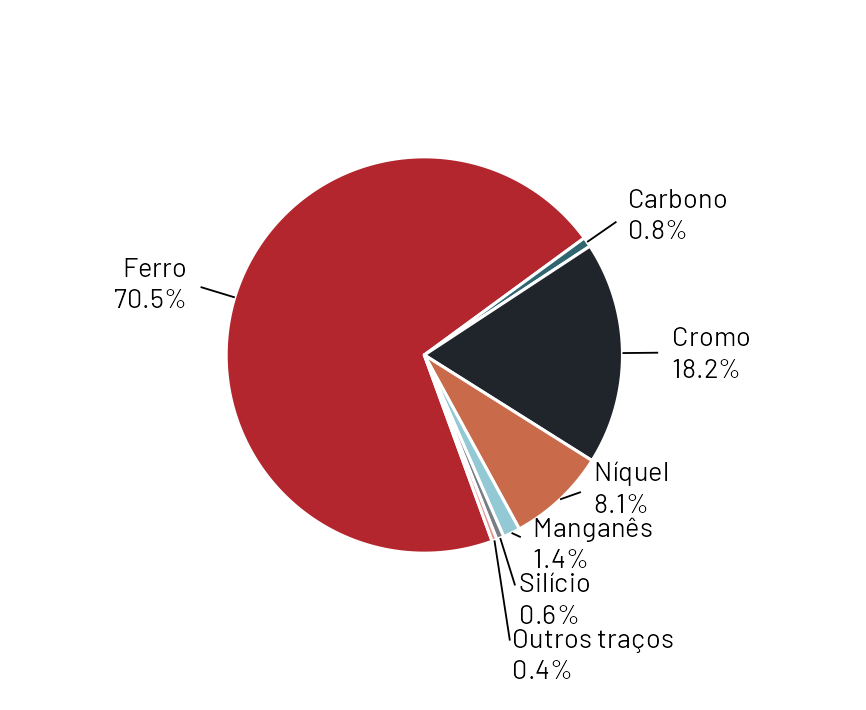
Pizza / rosca
Composição de um todo (porcentagens). Poucas fatias; rosca é só um "furo" no centro.
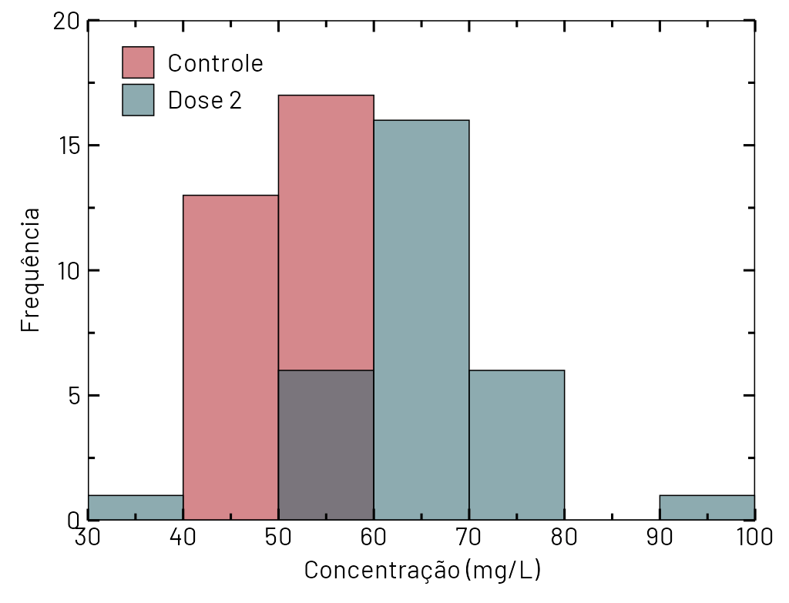
Histograma, densidade e distribuição acumulada
Como os valores se distribuem; compara grupos sobrepostos.
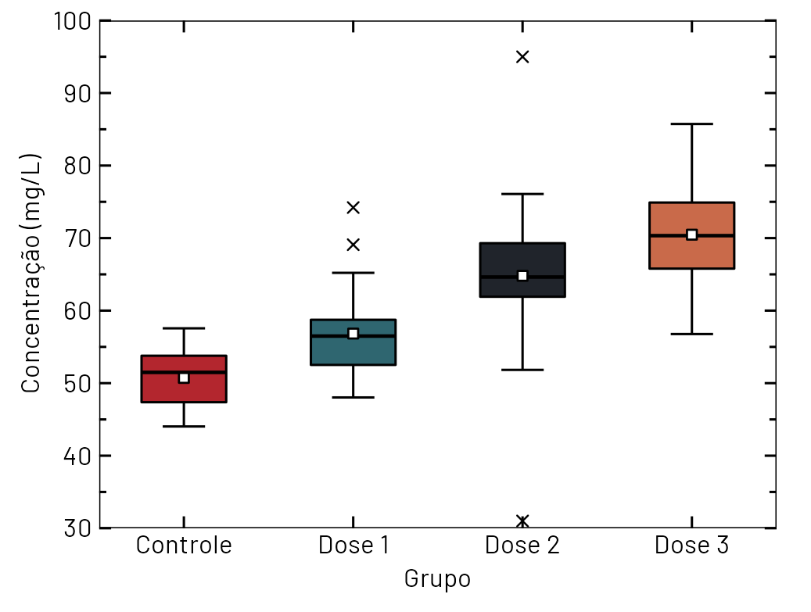
Boxplot (caixas)
Replicatas por grupo: mediana, quartis, mínimo/máximo e valores atípicos (×). O quadradinho é a média.
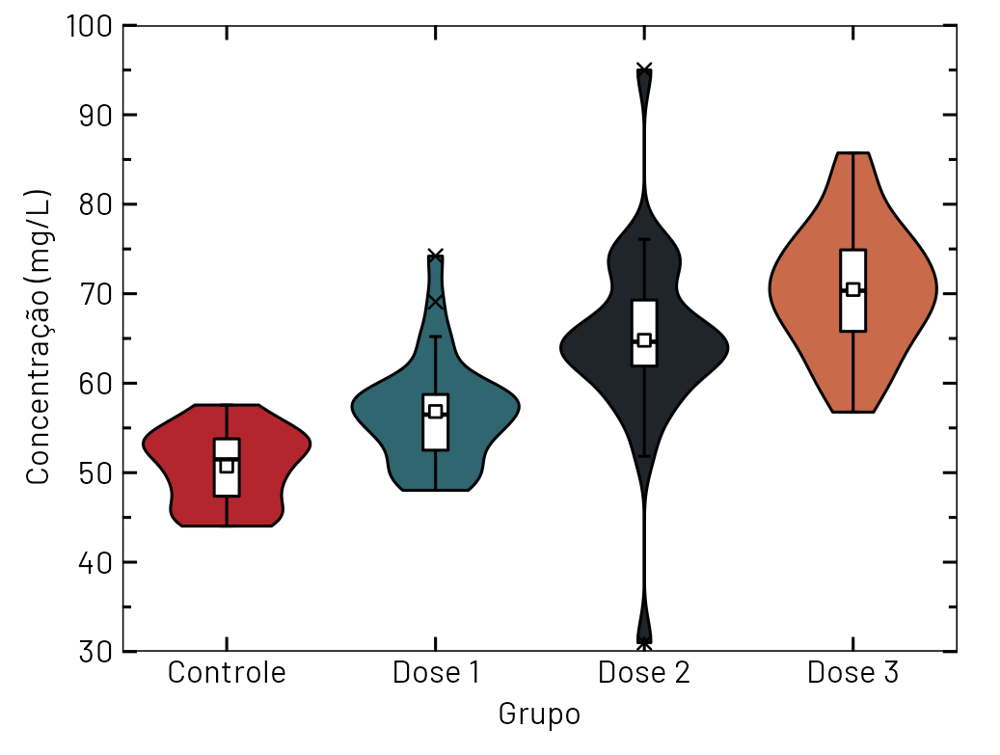
Violino (variação do boxplot, só no script)
Mostra a forma da distribuição, com a caixa dentro. Ainda não tem botão na tela: no script, cfg$boxplot$variacao <- "violino_box".
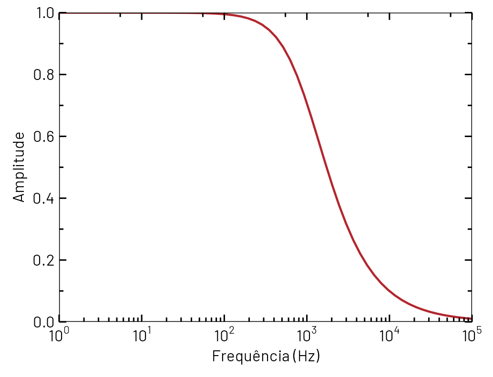
Escala logarítmica
Dados que variam muitas ordens de grandeza (resposta em frequência). Em Eixos → Escala.
6. Deixando o gráfico do seu jeito
Cada painel do trilho cuida de uma parte do visual. Tudo vale na hora; o que você muda aparece no rodapé em "O que você mudou", e Restaurar tudo volta ao padrão.
6.1 Eixos (painel 2)
Intervalos: onde cada eixo começa e termina e de quanto em quanto aparecem os traços. Ex.: para mostrar todos os anos, "Distância entre os traços" = 1. "Traços pequenos entre dois grandes" controla os traços menores. Com a moldura fechada, o traço que cai exatamente no canto (o 0 e o último valor) é tirado automaticamente para não sobrar um "dentinho" além da caixa; o número continua. Mude em Traços nas pontas do eixo (Automático, Sempre mostrar ou Nunca mostrar).
Escala: linear ou logarítmica, folga nas pontas (use 4% para os pontos das pontas não ficarem cortados pela moldura) e inverter eixo.
Números e títulos: títulos, formato dos números (normal, milhar, científica), casas decimais, dividir por mil, girar os números.
Grade: linhas de fundo nos traços grandes e/ou pequenos, com tipo, cor e opacidade.
Quebra do eixo Y: corta o trecho vazio entre grupos de dados muito distantes (o botão Achar o maior vazio nos meus dados sugere o trecho a cortar).
Eixo Y da direita (Y2): põe outra série, com outra unidade, num segundo eixo vertical.
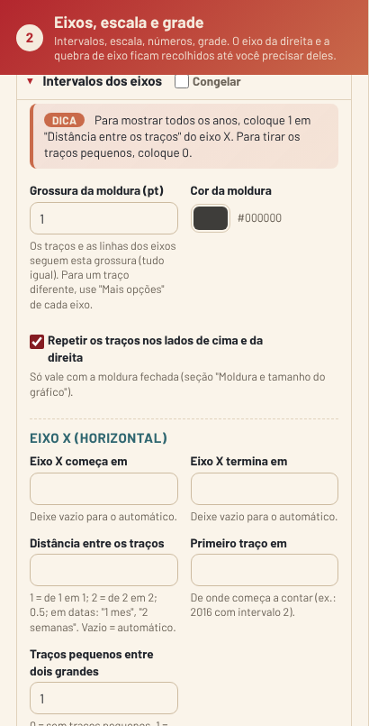
Seção "Intervalos dos eixos".
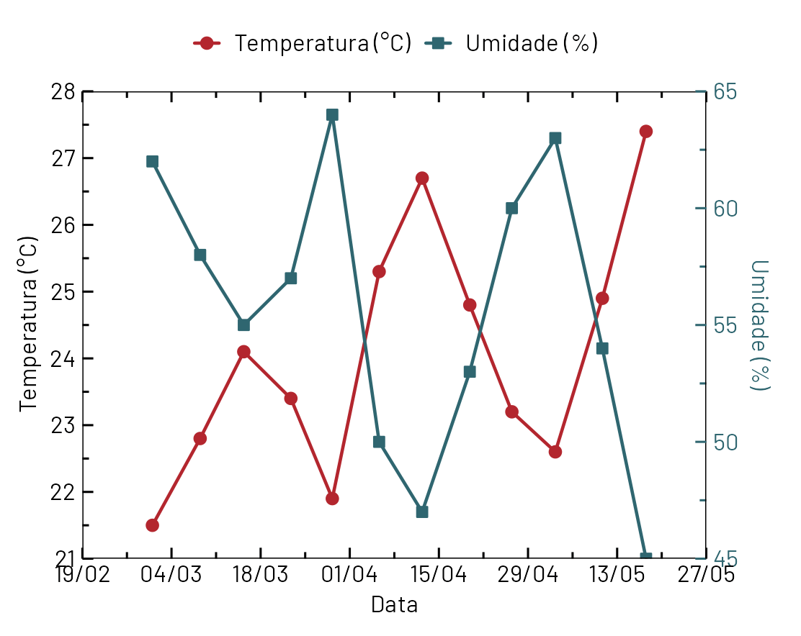
Eixo de datas e segundo eixo (Y2)
Temperatura (esquerda) e umidade (direita), com as cores do eixo seguindo a série.
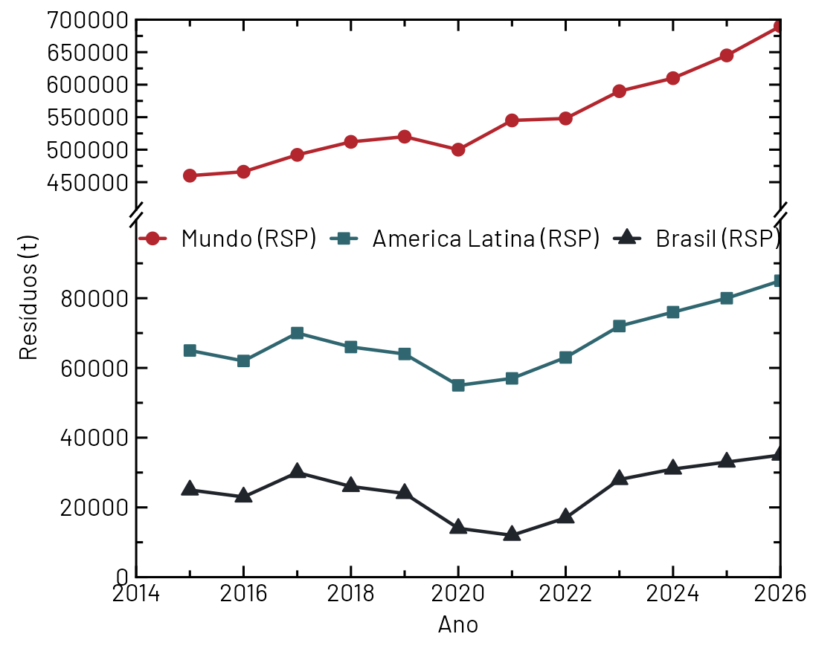
Quebra do eixo Y
Séries com valores em escalas muito diferentes ficam legíveis sem perder as menores.
6.2 Cores, linhas e símbolos (painel 3)
Paleta de cores: 12 opções. A padrão, Cinabro, usa as cores da marca e variações; as demais são degradês e paletas divergentes ou contínuas.
Minha paleta: cole códigos de cor (#B3262E, #2F6670…), ajuste e guarde com um nome.
Grossura da linha e tamanho do ponto (valem para todas as séries) e forma dos pontos: uma por série ou todas iguais.
Por série: cor, forma, tamanho e nome na legenda de cada série, na tabela que aparece abaixo.
Dica Com mais de 4 séries, varie também a forma e o tipo de linha: ajuda quem tem daltonismo e a impressão em preto e branco.
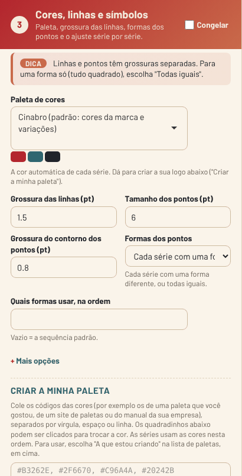
Painel Cores, linhas e símbolos.
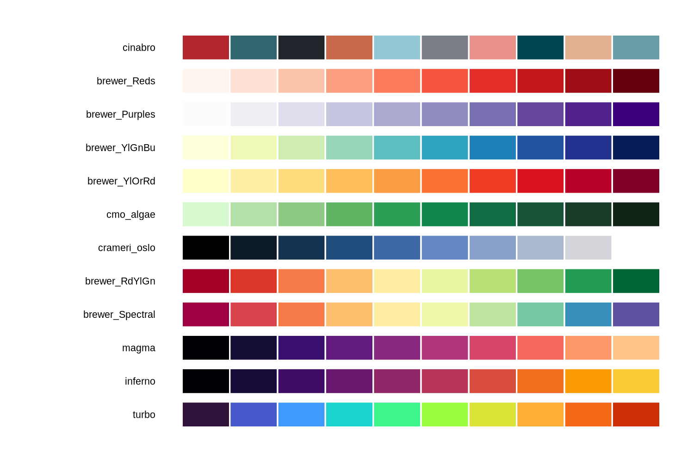
As 12 paletas do Cinabro (de cima para baixo: Cinabro, degradês, divergentes e contínuas).
6.3 Fonte e tamanhos (painel 4)
A fonte oficial é a Barlow. Você pode escolher qualquer fonte instalada no computador (digite para procurar) e adicionar um arquivo .ttf ou .otf. O tamanho base vale para todo o texto; tamanhos separados (título, eixos, números, legenda) têm prioridade. Tudo em negrito liga o negrito geral.
6.4 Legenda (painel 5)
Mostrar ou esconder, título, orientação (vertical/horizontal), número de colunas, fundo, borda e sombra. Arraste a caixa tracejada sobre o gráfico para mudar a posição e a alça da direita para a largura; ou digite a posição (0 a 1) e escolha um canto pronto.
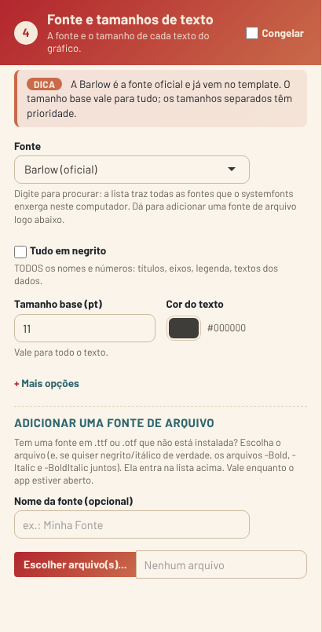
Painel Fonte e tamanhos de texto.
6.5 Estilos prontos, Restaurar e Congelar
Estilos prontos (cabeçalho): Padrão do template, Publicação (artigo) e Apresentação (slides) aplicam um conjunto de ajustes de uma vez.
Restaurar tudo volta ao padrão (blocos congelados ficam como estão).
Congelar: o quadradinho "Congelar" no topo de cada painel/seção trava aquele bloco. Congelado, ele não volta ao padrão em Restaurar tudo e passa para as abas novas. Use para fazer vários gráficos com a mesma fonte, moldura e cores: congele esses blocos e abra uma aba nova.
7. Análises
Ficam no painel 6 · Análises e anotações e na faixa de ferramentas. Cada análise nasce como um cartão quando você a adiciona; assim a tela fica limpa até você precisar.
7.1 Ajuste de curva e equação
1
Use gráfico de pontos e clique em Ajuste de curva ▾ na faixa.
2
Escolha o tipo: linear, exponencial, potência, logarítmico, polinomial (grau 2, 3…), suavizado (loess), fórmula livre (a sua equação) ou curva externa (uma curva que você já tem, só desenhada por cima dos dados).
3
Pronto: a curva é desenhada e a equação com R² aparece numa caixa de estatística separada, que você move e edita com o mouse.
No cartão do ajuste você escolhe a série (uma ou todas), passar pela origem, cor e tipo da linha e a faixa de confiança da curva.
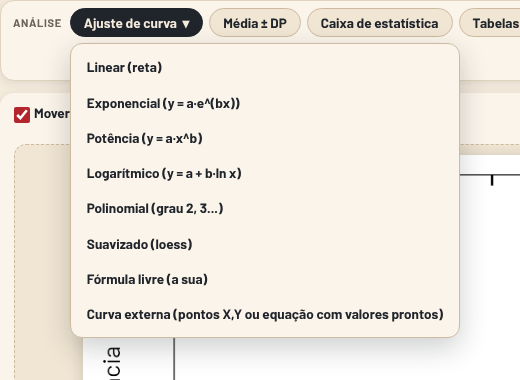
Tipos de ajuste disponíveis.
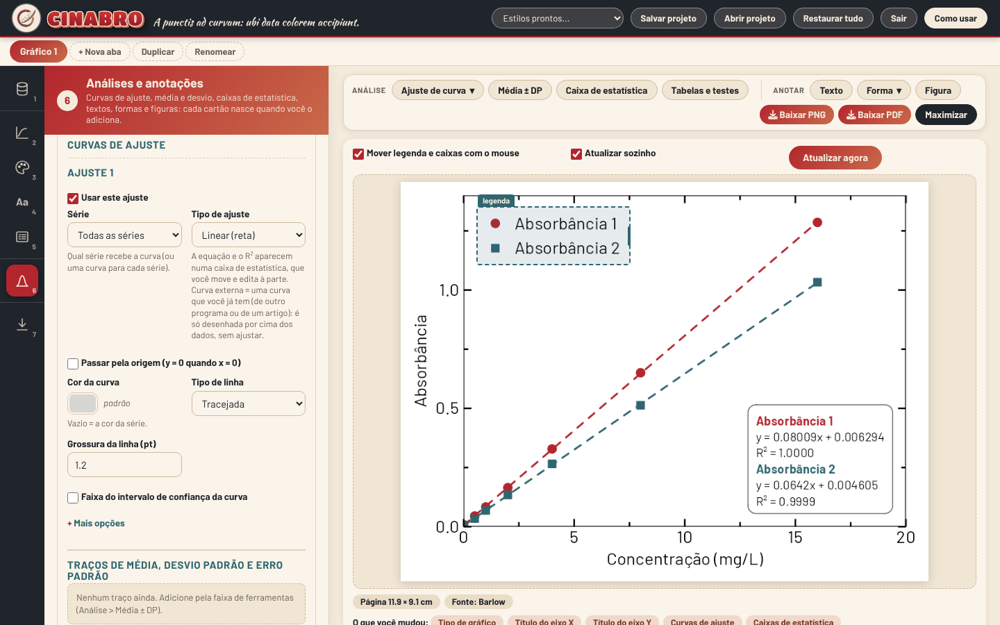
Curva de calibração com ajuste linear nas duas séries: equação e R² numa caixa à parte (CSV do Excel brasileiro).
7.2 Média ± desvio padrão
O botão Média ± DP desenha traços de média e a faixa de desvio (ou erro padrão, intervalo de confiança 95% ou mínimo–máximo) a partir dos dados, série por série. Os valores também podem ir numa caixa de estatística.
7.3 Barras de erro (quando você já tem a média e o desvio)
Se a planilha já traz a média em uma coluna e o desvio padrão em outra:
1
Tipo: "Só pontos" (ou linha com pontos).
2
Colunas do eixo Y: só a coluna da média.
3
Colunas de erro (± desvio padrão): escolha a coluna do desvio. A 1ª coluna de erro vale para a 1ª série, a 2ª para a 2ª, e assim por diante. Ela não é desenhada como série.
Aparecem então o lado da barra (os dois lados, só para cima, só para baixo), a cor (vazia = a cor de cada série; com uma cor, as barras ficam dessa cor, independente dos pontos), a grossura e a largura do chapéu. O eixo cresce sozinho para caber a barra.
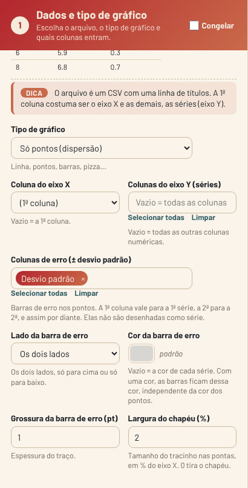
Campos das barras de erro, no painel Dados.
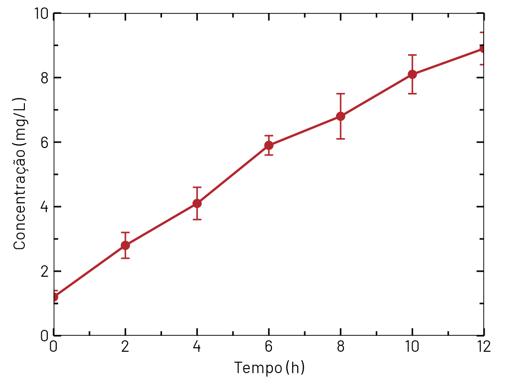
Linha com pontos e barras de erro
Cor das barras = cor da série.
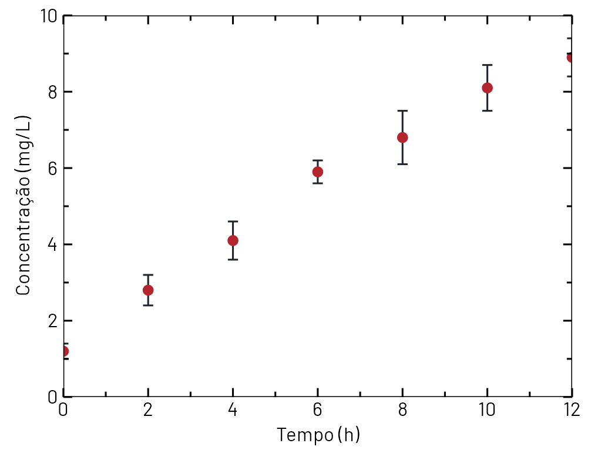
Só pontos, barras com cor própria
"Cor da barra de erro" em tinta, independente da cor dos pontos.
Atenção As barras de erro são desenhadas a partir dos valores da planilha; o Cinabro não recalcula o desvio. Informe na legenda da figura se o erro é desvio padrão, erro padrão ou intervalo de confiança.
7.4 Caixas de estatística
A Caixa de estatística mostra, dentro do gráfico e à parte da linha, os números que você escolher: média, desvio padrão, n, equação, R², valor de p… Você arrasta a caixa, redimensiona e edita tamanho, negrito, cor e quais itens aparecem (como na legenda). Os ajustes de curva criam a sua caixa automaticamente.
7.5 Normalidade, ANOVA e Kruskal-Wallis (comparar grupos)
Botão Tabelas e testes, na faixa. Escolha o tipo Boxplot (ou histograma/densidade) para que cada coluna seja um grupo, escolha os testes em "Testes na tabela" e clique em Calcular as tabelas. A tabela mostra o valor de p de cada teste e pode ser baixada em CSV.
1 · Normalidade (Shapiro-Wilk, de cada grupo). p > 0,05: sem evidência contra a normalidade.
▼
2 · Variâncias iguais? Bartlett (dados normais) ou Fligner-Killeen (robusto).
▼
Normais e variâncias parecidas:ANOVA de um fator (com η², o tamanho do efeito). Se p < 0,05: Tukey mostra quais pares diferem.
Caso contrário:Kruskal-Wallis. Se p < 0,05: Pares de Wilcoxon com ajuste de Holm mostram quais pares diferem.
Só dois grupos: teste t (Welch) ou Wilcoxon.
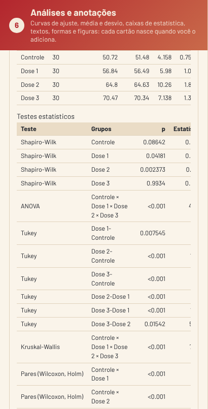
Tabela de testes: o valor de p logo depois dos grupos.
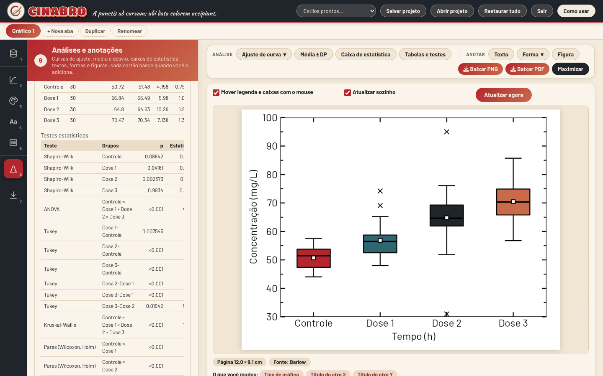
Boxplot das replicatas com a tabela de testes aberta ao lado. Os mesmos itens podem ir numa caixa de estatística dentro do gráfico.
Atenção Os testes precisam das replicatas (os valores individuais), não das médias: com média e desvio já resumidos faltam o n e os dados. A escolha do teste e a interpretação são do pesquisador; o Cinabro apenas calcula (com o R base: shapiro.test, aov, TukeyHSD, kruskal.test, pairwise.wilcox.test).
Lendo o valor de p Por convenção, p < 0,05 indica diferença estatisticamente significativa. A tabela mostra <0.001 quando é menor que isso. Compare sempre com o gráfico: significância não é o mesmo que importância prática.
8. Anotações no gráfico
Na faixa de ferramentas, grupo Anotar:
Texto: caixa de texto livre (ex.: "p < 0,05", "Amostra A"). Escreva no campo Texto do cartão; tamanho, cor, negrito, itálico, alinhamento, giro, preenchimento e borda são opcionais.
Forma: retângulo (inclusive de cantos arredondados), elipse/círculo, triângulo, losango, hexágono, estrela e polígono livre, para destacar regiões do gráfico.
Figura: insere um PNG ou JPEG (logotipo, esquema, foto da amostra) sobre o gráfico, com posição, tamanho, opacidade e giro. PNG com fundo transparente funciona. Aceita arquivos de até 200 MB; o programa usa só os pixels necessários para cada desenho, então fotos grandes não deixam o app pesado.
Tudo isso é móvel e editável com o mouse, sem digitar coordenada: cada caixa tem uma moldura tracejada sobre o gráfico. Clique para selecionar (aparecem alças nos cantos e nos lados), arraste para posicionar (uma sombra do conteúdo acompanha o mouse), puxe uma alça para o tamanho (no canto, texto e figura mudam proporcionalmente; no lado, largura ou altura ficam livres; Shift inverte; quando as caixas se sobrepõem, as menores ficam por cima) e use as setas do teclado para o ajuste fino. Um clique sem arrastar abre a edição rápida. A posição também pode ser dada em fração da caixa (0 a 1) ou nas unidades dos eixos; nos dois casos o arrasto funciona.
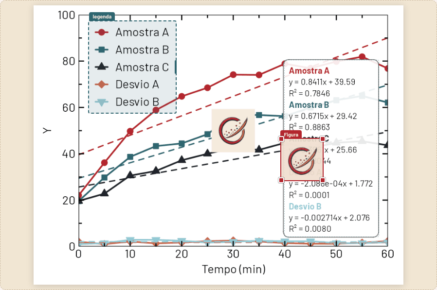
Cada caixa tem uma moldura tracejada (a legenda, a caixa de estatística). A figura selecionada, em vermelho, mostra as alças; durante o arrasto uma sombra do conteúdo acompanha o mouse.
Dica A figura anexada fica só na sessão: ela não vai no salvamento automático nem no projeto. Anexe de novo ao reabrir.
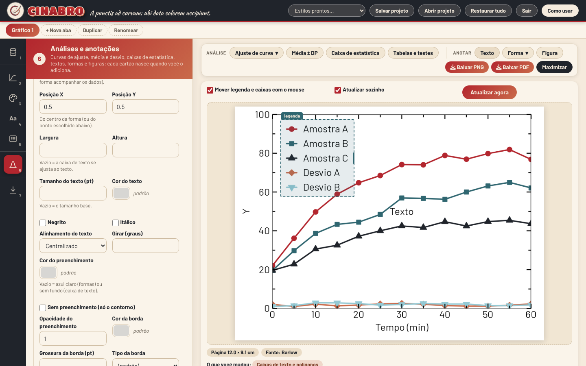
Um cartão de texto criado pelo botão "Texto".
9. Exportar
Os botões Baixar PNG e Baixar PDF ficam sempre à mão, acima do gráfico. No painel 7 · Tamanho e exportação você define como o arquivo sai:
Formato
Use para
PNG
Word, PowerPoint, relatórios, web. Fundo transparente opcional.
TIFF
Revistas científicas que pedem TIFF.
JPEG
Fotos; não tem transparência.
SVG
Vetorial editável (Inkscape, Illustrator); usa a Barlow direto.
PDF
Vetorial para impressão e artigos. Atenção: o PDF usa as fontes instaladas no Windows.
EMF
Colar no Word/PowerPoint como desenho editável (aparece se o pacote devEMF estiver instalado).
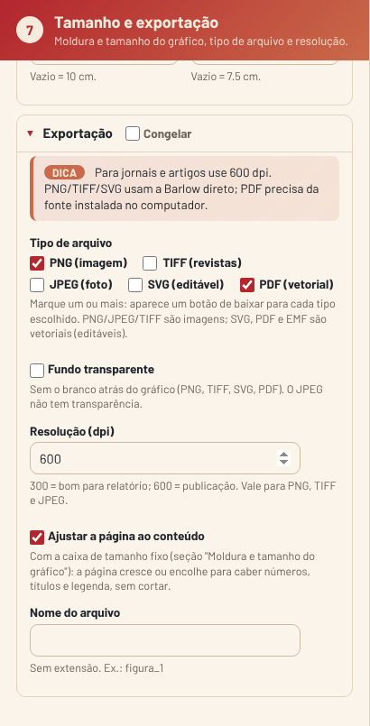
Seção "Exportação": formatos, resolução, fundo e nome do arquivo.
Tamanho (cm): em Moldura e tamanho do gráfico, defina largura e altura da caixa do gráfico. O padrão é 10 × 7,5 cm; mexer em fontes não muda o gráfico, a página é que se ajusta ("Ajustar a página ao conteúdo").
Resolução (dpi): 300 serve para relatório; 600 para publicação (padrão). Vale para PNG, TIFF e JPEG.
Nome do arquivo: sem extensão. Em branco, usa o nome do CSV.
Marque mais de um formato e aparece um botão de baixar para cada um.
Atenção (PDF e a fonte Barlow) O PDF usa as fontes instaladas no Windows. Para o PDF sair em Barlow, instale a fonte (abra os arquivos .ttf da pasta fontes\Barlow e clique em Instalar). PNG, TIFF e SVG já usam a Barlow direto, sem instalar.
Regra prática Word/PowerPoint → PNG (300–600 dpi). Revista → o formato que ela pede (TIFF 600 dpi ou PDF/SVG). Edição posterior → SVG ou PDF.
10. Guardar e retomar o trabalho
Você tem três formas de guardar, da mais automática à mais controlada:
10.1 Salvamento automático
Alguns segundos depois de qualquer mudança (e ao fechar a aba), o Cinabro guarda o gráfico atual, com os dados, em %LOCALAPPDATA%\Cinabro\sessao. Quando você abrir de novo, ou recarregar a página depois de uma queda, aparece "Retomar de onde você parou?":
Retomar devolve os dados e toda a configuração.
Começar do zero ignora.
Guarda só o último gráfico, da aba ativa. Para guardar vários, use o projeto.
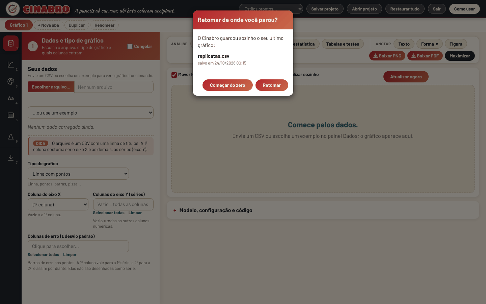
Pergunta ao reabrir o Cinabro.
10.2 Salvar projeto / Abrir projeto (você escolhe onde guardar)
No cabeçalho, Salvar projeto baixa um arquivo .cinabro com os dados e a configuração. Abrir projeto volta exatamente àquele ponto, em qualquer computador que tenha o Cinabro. É o jeito certo de arquivar um gráfico de um artigo ou de passar o trabalho a um colega.
10.3 Salvar configuração (só o visual)
Em Modelo, configuração e código (abaixo do gráfico), Salvar configuração guarda só o visual (fonte, cores, eixos…), sem os dados, para você aplicar a outros dados com Carregar configuração. É o jeito de manter o padrão do time.
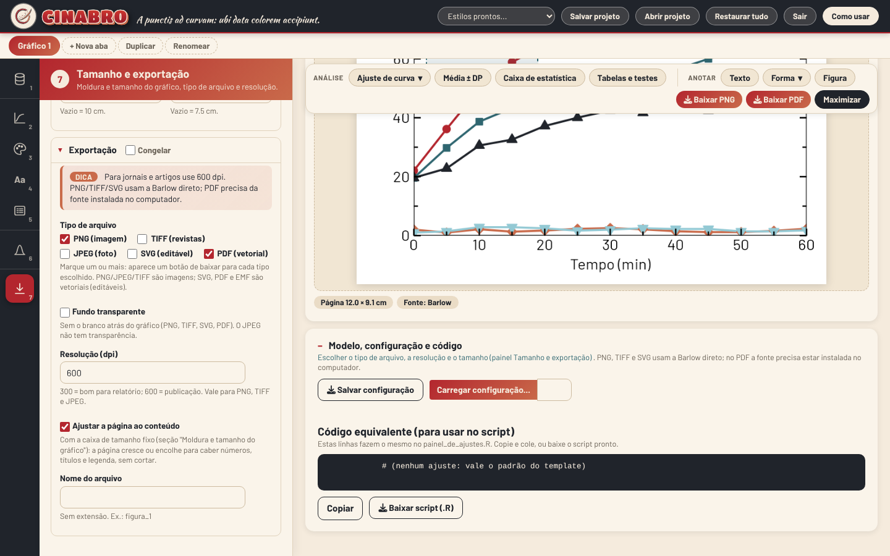
Abaixo do gráfico: salvar/carregar configuração e o código equivalente em R.
10.4 Abas
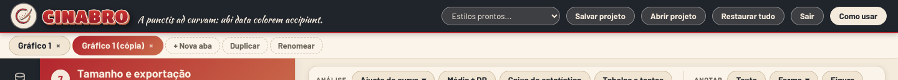
A barra de abas: um gráfico por aba.
+ Nova aba abre outro gráfico (sem dados; blocos congelados são mantidos). Duplicar faz uma cópia com dados e configuração para você variar. Renomear dá um nome à aba. Você edita um gráfico por vez; trocar de aba guarda e devolve tudo.
10.5 Código equivalente em R
Ainda em Modelo, configuração e código, o Cinabro escreve em R as mesmas opções que você escolheu, com botões Copiar e Baixar script (.R). Serve para registrar como o gráfico foi feito e para repetir a figura com outros dados em um script.
11. Boas práticas, perguntas frequentes e ajuda
Boas práticas
Padronize: acerte fonte, moldura e cores uma vez, congele esses blocos, salve a configuração e compartilhe o arquivo com o time.
Tamanho final: defina a largura e a altura em cm como vão aparecer no artigo (ex.: 8,5 cm = uma coluna). Evite redimensionar a imagem depois.
Letras legíveis: mantenha números e títulos entre 8 e 12 pt no tamanho final.
Cores: poucas séries usam bem a paleta Cinabro; com muitas séries, varie também forma e tipo de linha.
Unidades sempre nos títulos dos eixos.
Guarde o projeto (.cinabro) de cada figura de artigo: serve de registro e de ponto de partida para revisões.
Estatística: descreva na legenda o que a barra de erro representa e qual teste foi usado.
Perguntas frequentes
Pergunta
Resposta
Meus dados vão para a internet?
Não. O Cinabro roda no seu computador. A internet só é usada uma vez, para baixar os pacotes do R.
O programa travou / a tela ficou cinza.
Recarregue com F5 e escolha Retomar. Se não abrir, abra de novo pelo atalho. O último gráfico fica guardado sozinho.
Meu CSV com vírgula decimal veio errado.
Normalmente é detectado sozinho. Confira a tabela de conferência no painel Dados; se as colunas numéricas aparecerem como texto, salve o CSV de novo pelo Excel ("CSV UTF-8").
Os pontos das pontas ficaram cortados.
Em Eixos → Escala, ponha 4 em "Folga nas pontas (%)".
Quero a mesma figura com outros dados.
Salve a configuração, carregue o novo CSV e use Carregar configuração; ou use as abas com blocos congelados.
A tabela de testes não aparece / vem vazia.
Use o tipo Boxplot (ou histograma/densidade) com as replicatas em colunas, e clique em Calcular as tabelas.
Posso editar o gráfico em outro programa? O PDF saiu com outra fonte.
Exporte em SVG ou PDF (vetoriais) e abra no Inkscape ou Illustrator. Para o PDF sair em Barlow, instale a fonte no Windows (capítulo 9) ou use SVG/PNG.
Pedindo ajuda
Para o responsável resolver rápido, mande:
O que você estava fazendo e o que esperava (um print da tela ajuda muito).
O texto da janela preta do abrir_app.bat, se ela mostrou algum erro.
O arquivo app.log (em %LOCALAPPDATA%\Cinabro\log): só tem horários, tempos e nomes de campos, nunca os seus dados.
Se possível, o projeto (.cinabro) ou o CSV que causou o problema.
Contato do responsável:
Cinabro — laboratório de gráficos. Fonte Barlow (SIL Open Font License). Créditos das paletas e das fontes no arquivo NOTICE.md.